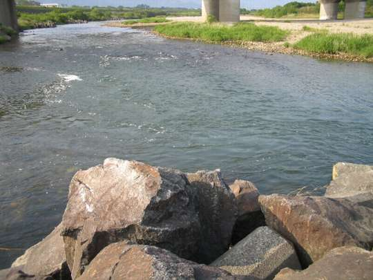
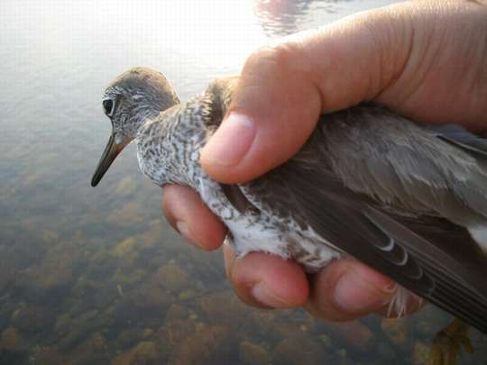

釣行日誌 故郷編
2007/05/14 竿を直し、鳥を放つ
ロッドが壊れた。と、言うか、正確には壊れているのに気がついた。ミッチェル409のスプールに巻き取られたラインが妙に白っぽく変色し、よく見るとささくれだったように細かな傷が無数についている。これはガイドが悪くなっているに違いないと思ってよく調べてみると、トップガイドのリングが割れてしまっており、ガイドの金属部分とラインとが直接こすれるようになってしまっていた。これではラインに傷がつくはずである。近所の釣具店にちょうど合うトップガイドがあるのか、なければ取り寄せられるかを聞いたところ、イシグロ豊川店なら修理用の部品が豊富にそろっている事がわかった。
金曜日の午後、実家に帰る途中でその店に寄ると、店内の一角にロッドの自作コーナーや補修コーナーが設けてあり、係りのお兄さんが出てきて、「どれどれ」という感じでトップガイドを手に取り、手際よくライターの火であぶって割れたトップガイドを取り外した。少しカッターで面を滑らかにした後、数ある部品ケースの交換用ガイドの中から一つを取り出し、接着剤で固定し、あっと言う間に修理が終わった。料金は、部品代だけの262円だけだった。手際のよさと料金の安さに感激して、お兄さんにありがとうと言って店を出た。
このルアーロッドは、コータックの Coma というロッドで、5g～14gまでのルアーに対応したライトアクションの竿である。もう何年前に買ったのか忘れてしまったが、ニュージーランドでは数々のレインボーを相手にして戦ってきた愛着のある竿なのである。トップガイドが壊れただけでお蔵入りにしてしまうのにはあまりにも惜しかったし、性能の良い竿なので、ぜひとも直したかった。きちんと釣具の修理の出来る店があるということは、本当にありがたいことである。
ロッドが直ったのに気をよくして、月曜日、仕事の終わった午後から釣りに出かけた。またまたサツキマス狙いである。この間のニゴイポイントもしっかりチェックしたが、まだ日が高いのか、何も反応は無かった。今日は新しいポイントを開拓しようと、河川敷の農道を通って川原に車で乗り入れた。休日にはキャンプやバーベキューで賑わう川原も、月曜日の午後ではだれもいない。川原の砂利は、いつも車が乗り入れているためか、比較的締まっており、走りやすい。走れるぎりぎりまで車を乗り入れ、支度を整える。リールをセットし、ラインをガイドに通していく。新品のトップガイドは、艶々と光って儚い希望を映し出す。今日はミノーを結んで挑戦である。

大岩を組んで作った水制工のポイントでは、絶対的に魅力あふれるポイントにもかかわらず、何も反応が無い。その上流は、テトラポッドが並べてあり、穏やかな流れ込みになっている。上流からアプローチするべく川原を歩いて上流へ向かい、流れ込みの上からミノーをキャストして釣り下る。あまり深くはないが、まずまず良さそうなポイントである。と、下流のこちら岸に、一羽の鳥が水面に浮いているのが見えた。シギか、チドリか？ こちらが徐々に近づいていっても、いっこうに飛び立つ気配が無い。時折バタバタと羽ばたくが、飛び去っていく様子は見えない。あまりバタバタやられると、浅場のポイントは荒れてしまうのになぁと心配するが、まだ鳥は飛び立たない。しょうがないので無視してルアーに集中する。澪筋を横切って、ヨタヨタとミノーが泳いでくる。
『居れば必ず出るポイントだがなぁ......』
必殺の祈りもむなしく、何も反応が無い。鳥は相変わらず羽ばたいている。これはひょっとして、親鳥が近くの巣から外敵の目をそらすためのいつわりの羽ばたき、偽傷行動かなぁと思って近づいてみると、鳥は一点を中心に円弧状に動いている。
「あっ！ テグスが絡んでいるんだ！」
人の姿を間近に見て驚いた鳥は羽ばたき続けているが、どうやら足にテグスが絡んでいるらしい。目を凝らすと、誰か釣り人の残したかなり太いテグスが石と鳥とを結び付けてしまっていた。慎重にテグスを手繰り、鳥の翼を傷めないようにやさしく手のひらに抱え込む。鳥の心臓がコトコトコトコトと早鐘のように打っている。足を見てみると案の定、テグスがきつく絡まっている。鯉釣りのテグスのようだ。

リーダークリッパーで二、三箇所切り解くと、鳥の足は自由になり、そのまま大空へ放ってやると、力強く飛び立ち、一声鳴いて下流へと飛び去って行った。飛び立つことができないほど衰弱していなくて良かった。良いことをしたと、どこか心温まる思いで今日の釣りはおしまいにすることにした。サツキマスのサの字も目にすることはできなかったが、一つの小さな命を助けてやれたことに気をよくして釣り場を後にした。
今日は、45歳の誕生日であった。
釣行日誌 故郷編 目次へ
サイトマップ
ホームへ
お問い合わせ